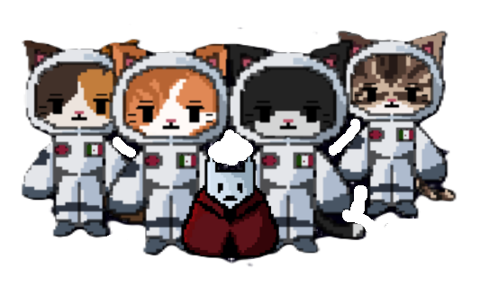
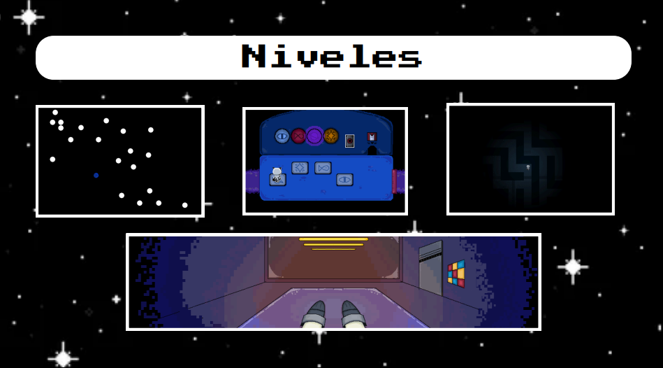

Meowstelar es un proyecto que se realizo con tiempo, dedicacion y esfuerzo por 4 personas que aman lo que hacen, 4 estudiantes que dia a dia dieron un extra para poder conseguir el resultado que ahora tienen el honor de compartir con toda la comunidad de Prepa 6, esperan que este sea de su agrado y a su vez que los motive a no dejar de lado nuestro increible Estudio Tecnino en Computacion. Ellos son: Vazquez Moreno Gael, Escamilla Flores Gabriela Abigail, Rosales Estrada María Fernanda, Ulage Parias Jorge Adán.
Eres un explorador espacial, tu nave se averió en la luna, tras un accidente que los hizo perder el control, después del accidente quedas inconsistente y al despertar te encuentras en una sala de interrogatorio, te han secuestro los aliens y no sabes dónde puedan estar tu tripulación. Debes superar una serie de desafíos para poder escapar. ¿Podrás superar los desafíos? ¿Lograrás encontrar a tu nave y a tu tripulación?
Una vez que ya sabemos un poco mas sobre la historia del juego tenemos que saber cuales son nuestros objetivos por que y para que estamos en esta increible mision.Entre ellos se nos dictaminan los diguitentes 1.Debemos de escapar de la base alienígena por medio de desafíos 2.Buscaremos a nuestra tripulación y 3.Encontraremos nuestra nave
El juego se construye de 4 niveles, cada uno de ellos comprende una parte unica y esencial del juego a traves de los cuales se tienen que atravesar distintos obstaculos y a su vez se pondran a prueba dos de los valores mas importantes como lo son la paciencia y adaptabilidad. El primer nivel se ubica en la parte inferior de la imagen adjunta, dentro de este debes escapar de la sala de interrogatorios por medio de tu cola realizando movimientos presisos hasta donde está un cable ya estando en esa posición toque la tecla espacio, después dara click cierto numero de veces a la barra que aparecera, tendra que darle espacio en el color amarillo justo en el momento y al terminar eso pasara al siguiente nivel en el segundo nivel las luces van prendiendo y debe colocarse sobre la placa que tenga el mismo símbolo de la luz que se encendió, el tercer nivel consta de una batalla estilo Undertale cuando cruzas con un enemigo y el ultimo nivel esta conformado por laberintos en la oscuridad dentro de los que deberas encontrar la salida.
